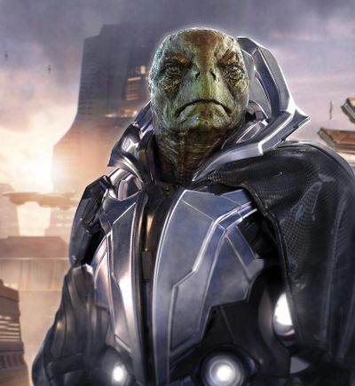

The Xi'an
(pronounced : / SHEE-ahn /)
Xi'an are a bipedal reptiloid-like race with four fingers on each hand. They are exothermic, and can consciously control their metabolic rates to slow down their need for sustenance. This feature is used to increase endurance and concentration in long-distance travel, and is also used used to reach a heightened state of euphoria that aids in the generation and appreciation of some of their artwork.

Ability Adjustments: +2 Constitution, +2 Intelligence, -2 Strength
Hit Points: 6
Fearless: Xi'an receive a +2 racial bonus to saving throws against fear effects.
Low-light Vision Xi'an can see in dim light as if it were normal light. For more details, see page 264.
Armor Savant Xi'an use armor in a way that complements their uniquely sturdy physiology. When wearing armor, they gain a +1 racial bonus to AC. When they’re wearing heavy armor, their armor check penalty is 1 less severe than normal.
Size and Type
Xi'an are Medium humanoids
Homeworld
The Xi'an Empire is located along the border of UEE's 'eastern Systems' and is comprised of at least fourteen systems. The Xi'an government has not disclosed the exact number of systems under their control but it is assumed that they have more territory deeper into space.
Their homeworld of RyiXy'an was rendered uninhabitable by a cataclysmic civil war known as The Great Divide. This event caused the warring Great Houses to establish the Xi'an Empire with its capital on Ka'ua, in the hopes of preventing further internecine conflict.
Society and Alignment
To Humans, Xi'an culture can seem rigid and lifeless. A majority of that is artifice. The Xi'an present themselves as polite but neutral, particularly to those they have never met before. This is an age-old social testing mechanism. They approach a person as a blank-slate and let the other person set the tone (or tip his or her hand) as to how the interaction will progress. When a Xi’an feels comfortable with a contact, they will begin to lose the artifice and relate on a more personal level. With Humans, it takes a little longer (as we said before, a lot of them remember the Messer Era).
Law enforcement and Crime
There is less crime per capita in the Xi'an Empire than in the UEE, but it still exists. The Xi'an pride themselves on having ‘dignified’ criminals, since acting from emotion is seen as a sign of weakness and immaturity. So criminals within the Xi’an Empire are similar to the syndicates within the UEE, sprawling disciplined organizations whose business happens to be crime.
There are Xi'an pirates and smugglers but they tend to be younger, still in their rambunctious phase of life. These pirates will usually hunt in UEE territory, but they will rob their own kind if the cargo’s right.[2]
Political System
A Xi’an House is a complex social and familial body in the Xi’an Empire made up of members of a single family. Houses serve the functions of states and corporations within the framework of the Xi’an government. Each House is allowed by the Emperor to serve one function deemed vital to the mutual prosperity of the Xi’an Empire.[12] Their system resembles a federal monarchy or the historical Chinese system of Fengjian.
Some Xi'an individuals choose to disinherit themselves from their house and renounce all familial and financial support in order to pursue an independent life. They are known as Nyahuoaōng
Religion
The state religion of the Xi'an is Li'tova, which is centered in the Kayfa system. Kayfa II is the seat of Li'tova, and humans believe that this is because the Kayfa II day is the same length as the Xi'an year. A dedicated adherent to Li'tova will pray for one full day on Kayfa II, about 128 Earth years and raise a centennial bloom.
Li'tova is centered around nothingness and the void. Xi’an who follow the religion are very concerned with their impact on the universe. Encourages the asking of questions, scientific exploration, and the contemplation of time.[5]
There are scattered alternate belief systems but they tend to offer moral guidelines or promote universal spirituality rather than worshiping specific gods.[2]
Relations
Banu
Friendly
Humans
Neutral, formerly hostile. Trading.
Vanduul
Indifferent, but not welcome.
Names and Language
Examples of the Xi'an Alphabet can be found in a PDF on the Star Citizen forum 'spectrum' Xi'an Alphabet When written in human script the characters denote the pitch of the words and the written language is glyph based. You can combine a number of syllables with the symbols to create names and words
- naithlūn: with no punctuation indicates a nutral pitch
- tyo’ma: the ’ indicates a falling pitch Tyo would start in a neutral pitch, but then descend to a medium low pitch
- m.oa: This would be pronounced as a single syllable in a very low pitch
- Li” indivates a high pitch to the word/syllable
Some further examples of mixed pitch include
- y.a’u: which would incate a rising pitch. it could start very low and rise above the neutral pitch
- nya’t.ong: Would indicate a falling pitch, staring neutral or higher and falling into lower ranges
- ny.as’eyo” : this would start in a lower register and move into the neutral and continue rising to a higher pitch
Some examples of Xi'an Names are T.yi, Torsi Leelk, Twayng Kray, Weó Kray Yalé Ruá
References
Star Citizen Wiki fandom
Star Citizen Tools
Star Citizen: A quick Guide to SRX